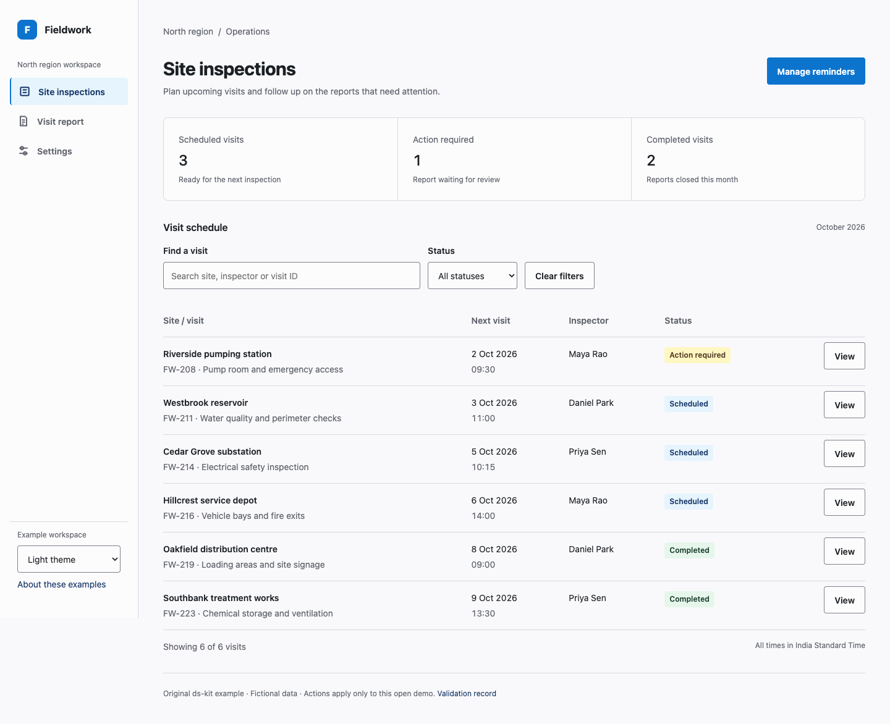
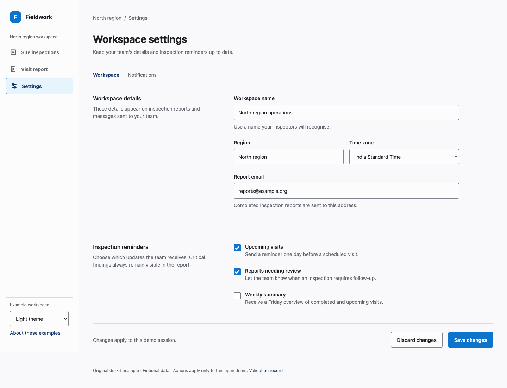
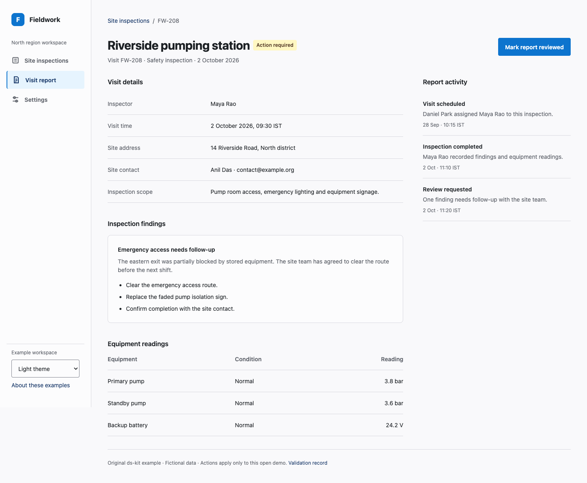

Site inspections
Scan records, filter the schedule and recover from empty results.
Open collectionThree original Fieldwork screens built with ds-kit foundations and recipes.

Scan records, filter the schedule and recover from empty results.
Open collection
Edit fields, correct an error and confirm the save outcome.
Open settings
Understand the record and mark its report reviewed.
Open detailEach screen offers light/dark themes and reachable mobile navigation. Data is fictional; actions affect only the open page. These examples use the kit as their design reference, without ds-loop or a second design library.
Composition guide · Comparison and validation record · Foundation specimen